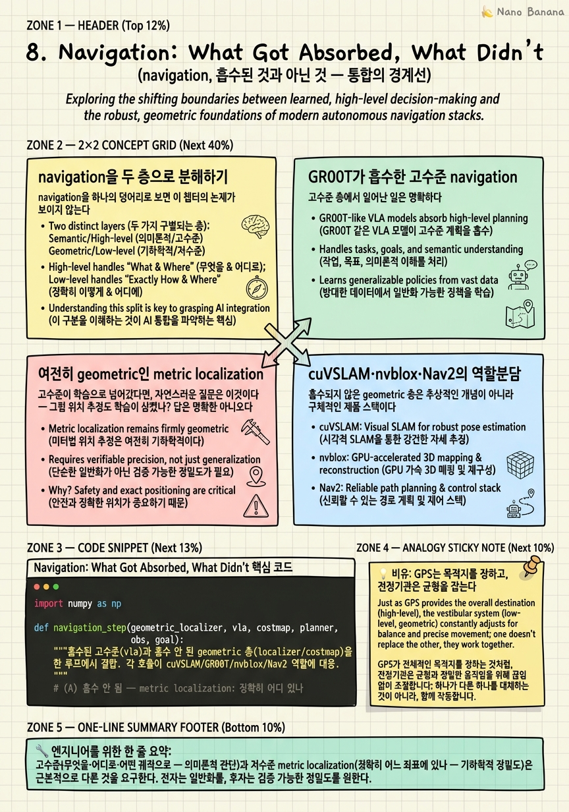

Navigation: What Got Absorbed, What Didn't

🎯 학습 목표
- navigation을 '뇌(의사결정)'와 '감각·평형(localization)'으로 분해할 수 있다
- GR00T가 point-to-point navigation을 흡수한 범위와 원문 근거를 안다
- metric localization이 왜 여전히 geometric 방식인지 설명할 수 있다
- cuVSLAM·nvblox·Nav2의 역할 분담을 안다
- 상용 AMR 트랙과 학습 트랙이 어떻게 공존하는지 안다
이 코스는 계속해서 하나의 질문을 밀고 왔다 — 학습이 어디까지 삼켰고, 어디서 멈췄나. navigation은 이 질문이 가장 선명하게 갈라지는 지점이다. 겉보기에 GR00T는 '알아서 목적지까지 간다'. 하지만 그 매끄러운 표면 아래에는 두 개의 완전히 다른 층이 포개져 있다. 위층 — '어디로 갈지, 어떤 궤적으로 갈지' 같은 고수준 의사결정 — 은 학습 모델(COMPASS/GR00T)이 흡수했다. 아래층 — '내가 지금 정확히 어느 좌표에 있나' 같은 metric localization — 은 여전히 손으로 짠 geometric 스택이 지탱한다. 이 챕터는 그 경계선을 정확히 긋는다.
핵심 논제는 도발적일 만큼 단순하다. GR00T조차 pose는 geometric이다. N1.6은 COMPASS가 Isaac Lab에서 대량 생성한 합성데이터로 point-to-point navigation을 학습해 '어디로 어떻게'를 policy 안에 녹였지만, 그 policy가 뱉는 waypoint가 실제 세계의 어느 좌표를 가리키는지는 스스로 알지 못한다. waypoint가 real coordinate에 대응하려면 로봇의 위치를 정확히 아는 별도의 추정기가 필요하고, 그 일은 학습이 아니라 cuVSLAM 같은 geometric SLAM이 한다. 학습이 삼킨 층과 여전히 엔지니어링인 층이 여기서 물리적으로 분리된다.
그래서 이 챕터는 navigation을 두 층으로 분해하는 것에서 출발한다. 먼저 고수준(무엇을·어떤 궤적으로)과 저수준(정확히 어디에)을 나누고, GR00T가 흡수한 고수준을 COMPASS 합성데이터 파이프라인과 함께 못 박는다. 다음으로 왜 metric localization이 여전히 geometric인지를 NVIDIA의 명시적 문장으로 확인하고, 그 geometric 트랙을 구성하는 cuVSLAM·nvblox·Nav2의 역할분담을 해부한다. 마지막으로 상용 AMR(geometric SLAM)과 학습 mobility(COMPASS/GR00T)라는 두 트랙이 왜 대체 관계가 아니라 공존 관계인지를 본다. 결론을 미리 말하면 — 고수준 결정은 학습으로 수렴하지만, 저수준 위치와 costmap은 여전히 검증된 geometry가 떠받친다.
핵심 내용
navigation을 두 층으로 분해하기
navigation을 하나의 덩어리로 보면 이 챕터의 논제가 보이지 않는다. 먼저 두 층으로 갈라야 한다.
고수준(high-level) 층은 '무엇을·어디로·어떤 궤적으로'를 정한다. 목적지를 고르고, 막힌 통로를 피해 우회할지 결정하고, 출발점에서 목표점까지 대략의 경로(point-to-point 궤적)를 그린다. 이 층은 의미론적이다 — '주방으로 가라', '저 사람을 피해 가라' 같은 지시와 장면 이해에 반응한다. 정밀한 좌표보다 '방향과 의도'가 중요하다.
저수준(low-level) 층은 '내가 지금 정확히 어디 있나'를 답한다. metric localization이다. 로봇이 세계 좌표계에서 자신의 6-DoF pose \(T_{wr} \in SE(3)\) 를 센티미터 단위로 추정하는 문제다. 이 층은 기하학적이다 — 카메라·IMU가 관측한 feature의 삼각측량, 프레임 간 pose 누적, drift 보정 같은 순수 geometry가 지배한다. 의미론이 아니라 정밀도가 전부다.
왜 이 분해가 결정적인가. 두 층은 요구하는 것이 근본적으로 다르기 때문이다. 고수준은 '그럴듯한 일반화'를 원한다 — 처음 보는 방에서도 대충 맞는 방향으로 가야 하고, 이건 대규모 데이터로 학습한 policy가 잘하는 일이다. 저수준은 '검증 가능한 정밀도'를 원한다 — waypoint가 1미터 어긋나면 로봇은 벽에 부딪힌다. 이건 오차 한계가 수학적으로 보장되는 geometric 추정이 잘하는 일이다. 일반화를 원하는 층과 정밀도를 원하는 층은 서로 다른 도구를 부른다.
이 챕터의 전체 논증은 이 분해 위에 서 있다. 학습(COMPASS/GR00T)은 위층을 삼켰고, geometry(cuVSLAM 계열)는 아래층을 지킨다. 다음 두 섹션이 이 두 층을 각각 못 박는다.
GR00T가 흡수한 고수준 navigation
고수준 층에서 일어난 일은 명확하다. 학습이 삼켰다. NVIDIA는 이를 다음과 같이 명시한다.
GR00T N1.6 is finetuned for point-to-point navigation using large-scale synthetic datasets generated by COMPASS in Isaac Lab.
풀이하면: GR00T N1.6은 Isaac Lab에서 COMPASS가 생성한 대규모 합성데이터로 point-to-point navigation을 finetune했다. 여기서 흡수된 것의 정체가 드러난다 — 출발점에서 목표점까지 이어지는 궤적을 뽑아내는 능력, 그리고 그 과정의 고수준 의사결정(어느 방향으로, 무엇을 피해)이 policy의 weight 안으로 들어갔다.
결정적인 것은 이 능력이 어디서 왔느냐다. 실제 로봇을 수만 번 굴려 얻은 게 아니라, COMPASS가 Isaac Lab 시뮬레이터 안에서 대량 생성한 synthetic dataset에서 왔다. 이 코스 앞부분에서 본 COMPASS의 cross-embodiment mobility 파이프라인 — 다양한 embodiment와 장면에서 point-to-point 궤적을 대량으로 찍어내는 그 파이프라인 — 이 바로 GR00T의 고수준 navigation을 먹인 데이터 공장이다. 시뮬레이션이 고수준 층의 학습 연료를 공급한다.
이 층이 '흡수됐다'는 말의 의미를 정확히 하자. 예전에는 고수준 경로계획도 상당 부분 손으로 짠 planner(A*, Dijkstra, 그래프 탐색)의 몫이었다. GR00T N1.6에서는 point-to-point navigation의 이 부분이 학습 policy로 넘어갔다. 의미론적 지시를 궤적으로 옮기는 일, 장면을 보고 어디로 갈지 정하는 일 — 이 '판단'의 층이 학습으로 수렴한 것이다.
하지만 여기서 반드시 선을 그어야 한다. policy가 '어디로 어떤 궤적으로'를 알아도, 그 궤적의 각 점이 실제 세계의 어느 좌표인지는 별개의 문제다. policy는 '3미터 앞 문으로'라는 상대적 의도를 내지만, 그 '3미터 앞'이 세계 좌표계의 어디인지는 로봇의 현재 pose를 알아야만 결정된다. 흡수는 고수준에서 멈췄다. 다음 섹션이 그 멈춘 지점 — metric localization — 을 다룬다.
여전히 geometric인 metric localization
고수준이 학습으로 넘어갔다면, 자연스러운 질문은 이것이다 — 그럼 위치 추정도 학습이 삼켰나? 답은 명확한 아니오다. NVIDIA는 흡수되지 않은 층을 이렇게 못 박는다.
the system still requires an accurate estimate of the robot's location so commands and waypoints correspond to real coordinates.
풀이: 시스템은 여전히 로봇 위치의 정확한 추정을 필요로 하며, 그래야 command와 waypoint가 real coordinate에 대응한다. 문장 안의 'still'과 'real coordinates'가 이 챕터의 무게중심이다. GR00T가 아무리 고수준을 삼켜도, waypoint를 실제 좌표에 못 박는 일 — metric localization — 은 여전히(still) 별도로 필요하다.
왜 이게 학습으로 흡수되지 않았는가. 두 가지 이유가 겹친다. 첫째, 정밀도 요구다. localization은 센티미터 단위 정확도와 검증 가능한 오차 한계를 요구하는데, 학습 policy의 확률적 출력은 이런 보장을 주기 어렵다. 둘째, drift 문제다. 위치 추정은 프레임 간 pose를 누적하는 과정이라 작은 오차가 시간에 따라 쌓인다(compounding). 이 drift를 억제하려면 loop closure, bundle adjustment 같은 명시적 geometric 최적화가 필요하고, 이건 수십 년간 다듬어진 SLAM의 정밀 기계다.
그래서 GR00T의 실제 배치에서 metric localization은 vision-centric mapping/localization 스택이 담당한다. 구체적으로는 prebuilt map(미리 만들어 둔 지도)과 onboard camera를 결합해 low-drift pose를 산출한다. 미리 지어둔 지도가 절대 기준(anchor)을 주고, 카메라가 실시간으로 그 지도 안에서 자신을 맞춰(localize) drift를 억누른다. 이 전체가 학습이 아니라 geometry다.
이 지점이 이 코스 전체에서 가장 반직관적인 사실 중 하나다. 로봇의 '뇌'는 world model이고 '다리'는 RL policy이며 navigation의 '판단'은 학습인데 — 정작 '내가 어디 있나'라는 가장 기초적인 질문의 답은 여전히 손으로 짠 SLAM이 낸다. 학습이 위와 아래를 삼키는 동안, 정밀 localization이라는 층은 검증된 engineering으로 남았다. 다음 섹션에서 그 engineering의 실체 — cuVSLAM·nvblox·Nav2 — 를 연다.
cuVSLAM·nvblox·Nav2의 역할분담
흡수되지 않은 geometric 층은 추상적인 개념이 아니라 구체적인 제품 스택이다. NVIDIA의 상용 AMR(Autonomous Mobile Robot) 스택 — Isaac ROS / Isaac Perceptor(구 AMR) — 가 그것이다. 이 스택은 학습을 쓰지 않는 순수 geometric 파이프라인이고, 세 개의 컴포넌트가 명확히 역할을 나눈다.
cuVSLAM — 위치추정을 맡는다. CUDA로 가속된 stereo visual-inertial SLAM으로, stereo 카메라와 IMU를 결합해 로봇의 pose를 실시간으로 추정한다(visual-inertial = 시각 feature + 관성 측정의 융합). 이것이 앞 섹션에서 말한 '정확한 위치 추정'의 실제 엔진이다. drift를 억제한 저지연 pose가 이 컴포넌트의 산출물이다.
nvblox — 주변 3D 구조와 장애물을 맡는다. CUDA 기반 3D 재구성으로, depth 관측을 누적해 로봇 주변의 3D 표현을 실시간으로 짓고, 여기서 local obstacle costmap을 뽑는다. 대략 5미터 반경의 근거리 장애물을 커버한다 — '지금 당장 부딪힐 것'을 감지하는 근접 안전 층이다. localization이 '어디 있나'라면 nvblox는 '내 주변에 뭐가 있나'다.
Nav2 — 경로계획을 맡는다. ROS 2의 표준 navigation 스택으로, cuVSLAM의 pose와 nvblox의 costmap을 받아 실제로 갈 경로를 계획하고 로봇을 몬다. 주목할 점은 lidar-free 비전 옵션을 포함한다는 것 — 전통적으로 lidar에 의존하던 계획을 카메라 기반으로도 돌릴 수 있다.
세 컴포넌트의 역할을 한 줄씩 정리하면 이렇다.
| 컴포넌트 | 담당 | 방식 | 산출물 |
|---|---|---|---|
| cuVSLAM | metric localization (어디 있나) | CUDA stereo visual-inertial SLAM | low-drift 6-DoF pose |
| nvblox | local mapping/장애물 (주변에 뭐가) | CUDA 3D 재구성, ~5m 근거리 | local obstacle costmap |
| Nav2 | 경로계획/실행 (어떻게 갈까) | pose+costmap 기반 planner, lidar-free 옵션 | 실행 경로/속도 명령 |
이 스택이 도는 하드웨어도 못 박아 두자. 레퍼런스 센서/컴퓨트는 Nova Orin이고, 검증용 레퍼런스 로봇은 Nova Carter(Jetson AGX Orin 탑재)다. 즉 이 geometric 파이프라인은 특정 엣지 컴퓨트 위에서 실시간으로 도는, 실제 배치된 제품이다.
핵심은 이 세 컴포넌트 어디에도 학습 policy가 없다는 점이다. cuVSLAM의 삼각측량, nvblox의 voxel 누적, Nav2의 그래프 계획 — 전부 검증 가능한 geometry와 최적화다. GR00T의 학습 고수준 navigation이 '어디로'를 정하면, 그 아래에서 이 geometric 스택이 '정확히 어디서, 무엇을 피해, 어떻게'를 실시간으로 떠받친다.
두 트랙의 공존
지금까지의 논의는 하나의 큰 그림으로 모인다. 2026년 현재 로봇 navigation에는 두 개의 트랙이 나란히 존재하며, 이 둘은 경쟁이 아니라 공존한다.
트랙 A — 상용 AMR (geometric SLAM 스택). cuVSLAM·nvblox·Nav2로 구성된 Isaac ROS/Perceptor 파이프라인이다. 학습을 쓰지 않고, 대신 안정성과 검증 가능성을 준다. 창고·공장에서 지금 당장 돌아야 하는 AMR은 확률적으로 흔들리는 policy가 아니라 오차 한계가 보장되는 geometry를 원한다. 이 트랙의 강점은 신뢰성이다.
트랙 B — 학습 mobility (COMPASS/GR00T). COMPASS 합성데이터로 학습한 point-to-point navigation policy와 GR00T의 고수준 의사결정이다. 처음 보는 환경, 다양한 embodiment, 의미론적 지시에 대한 일반화를 준다. 이 트랙의 강점은 유연성과 확장성이다.
두 트랙이 어떻게 나뉘어 일하는지를 흡수 여부로 못 박으면 이렇다. 이것이 이 챕터의 핵심 표다.
| navigation의 층 | 흡수 상태 | 담당 트랙 |
|---|---|---|
| 고수준 의사결정 (어디로 갈지, 우회할지) | 흡수됨 | B — GR00T/COMPASS 학습 policy |
| point-to-point 궤적 생성 | 흡수됨 | B — COMPASS 합성데이터로 finetune |
| metric localization (정확히 어디 있나) | 흡수 안 됨 | A — cuVSLAM (geometric SLAM) |
| local 장애물 costmap (주변에 뭐가) | 흡수 안 됨 | A — nvblox (geometric 재구성) |
| 저수준 경로계획/실행 | 흡수 안 됨 (대체로) | A — Nav2 (geometric planner) |
표가 말하는 바는 분명하다. 흡수의 경계선은 '의미론적 판단'과 '기하학적 정밀도' 사이를 지난다. 판단(무엇을·어디로)은 트랙 B로 수렴했지만, 정밀도(정확히 어디서·무엇을 피해)는 트랙 A가 지탱한다.
왜 대체가 아니라 공존인가. 두 트랙이 서로 다른 것을 잘하고, 실제 로봇은 둘 다 필요하기 때문이다. GR00T가 '주방으로 가라'를 궤적으로 옮겨도, 그 궤적을 real coordinate에 못 박고 5미터 앞 사람을 피하려면 cuVSLAM의 pose와 nvblox의 costmap이 있어야 한다. 반대로 geometric 스택만으로는 '저 사람을 정중히 피해 돌아가라' 같은 의미론적 유연성을 내기 어렵다. 고수준 결정은 B로 수렴하지만 저수준 위치·costmap은 A가 지탱한다 — 이 분업이 현재 배치의 실제 모습이다.
이 챕터의 결론이자 이 코스 전체의 축소판이 여기 있다. 학습은 로봇 스택을 위(뇌)와 아래(다리, 고수준 navigation)에서 삼켰지만, 그 사이의 정밀 metric localization 층은 검증된 geometry로 남았다. GR00T조차 pose는 geometric이다. 통합의 경계선은 아직, '무엇을 할지'와 '정확히 어디 있는지' 사이를 지나고 있다.
💡 비유로 이해하기
navigation의 두 층을 몸으로 느끼려면 사람이 걸어서 카페에 가는 장면을 떠올리면 된다. 이 단순한 행위 안에 완전히 다른 두 시스템이 동시에 돌고 있다.
하나는 머릿속 GPS다. '카페에 가야지', '저 공사장은 막혔으니 왼쪽 골목으로 돌자', '대략 저 방향으로 3분쯤 걸으면 나온다' — 이것이 고수준 층이다. 목적지를 정하고 경로를 그리는 의미론적 판단이다. 정확한 좌표는 필요 없다. '저쪽으로, 저 건물을 피해'라는 방향과 의도면 충분하다. 이 층이 바로 GR00T/COMPASS가 학습으로 흡수한 부분이다 — 처음 가보는 동네에서도 대충 맞는 방향으로 걸을 수 있는, 일반화된 판단.
다른 하나는 전정기관(vestibular system)과 발바닥 감각이다. 걷는 매 순간 당신의 몸은 '지금 내 무게중심이 정확히 어디에 있고, 바닥이 얼마나 기울었고, 발을 어디에 딛어야 안 넘어지나'를 센티미터·밀리초 단위로 추정한다. 이건 판단이 아니라 정밀 측정이다. 눈을 감고 걸어보면 이 층이 얼마나 정밀한 기하학인지 안다 — 관성(귀 속 전정기관)과 시각을 융합해 몸의 자세를 추정하는 것, 정확히 cuVSLAM의 visual-inertial 추정과 같은 일이다. 그리고 발끝으로 앞을 더듬어 장애물을 감지하는 것이 nvblox의 근거리 costmap이다.
결정적 통찰: 이 두 시스템은 서로를 대체하지 않는다. 아무리 GPS가 완벽하게 '카페는 저쪽'이라고 말해도, 전정기관이 무게중심을 못 잡으면 당신은 첫걸음에 넘어진다. 반대로 전정기관이 아무리 균형을 잘 잡아도, GPS가 없으면 어디로 갈지 모른다. 판단하는 층과 균형 잡는 층은 다른 뇌 영역이 담당하고, 둘 다 있어야 걷는다.
로봇도 똑같다. GR00T의 학습 policy는 머릿속 GPS다 — 어디로 갈지 판단한다. cuVSLAM·nvblox·Nav2는 전정기관이다 — 정확히 어디 있고 뭘 피할지 측정한다. 흥미로운 사실은, 로봇에서 '머릿속 GPS'는 학습으로 만들어졌지만 '전정기관'은 여전히 손으로 짠 정밀 geometry라는 점이다. 판단은 배울 수 있어도, 균형의 정밀도는 아직 측정 기계의 몫이다.
💻 코드 예시
두 층이 하나의 제어 루프 안에서 어떻게 결합되는지를 스케치한다. 핵심은 세 컴포넌트의 역할분담이 코드 구조로 그대로 드러난다는 것이다 — geometric_localizer가 '정확히 어디 있나'(\(T_{wr}\), cuVSLAM 역할)를, vla가 '어디로 갈까'(waypoint 시퀀스, GR00T 고수준 역할)를, costmap이 '부딪힐 것은 없나'(nvblox 역할)를 맡는다. 결정적 포인트: VLA가 낸 상대적 waypoint를 실제 세계 좌표에 못 박으려면 반드시 localizer의 pose가 있어야 한다 — verbatim 'so commands and waypoints correspond to real coordinates'가 코드에서 pose_to_world 변환 한 줄로 나타난다.
import numpy as np
def navigation_step(geometric_localizer, vla, costmap, planner,
obs, goal):
"""흡수된 고수준(vla)과 흡수 안 된 geometric 층(localizer/costmap)을
한 루프에서 결합. 각 호출이 cuVSLAM/GR00T/nvblox/Nav2 역할에 대응.
"""
# (A) 흡수 안 됨 — metric localization: 정확히 어디 있나
# cuVSLAM 역할. 세계 좌표계 6-DoF pose T_wr (low-drift).
T_wr = geometric_localizer.estimate_pose(obs.stereo, obs.imu)
# (B) 흡수됨 — 고수준 navigation: 어디로, 어떤 궤적으로
# GR00T/COMPASS 역할. 장면+목표를 상대적 waypoint 시퀀스로.
rel_waypoints = vla.plan_waypoints(obs.rgb, goal) # 로봇 기준 좌표
# (C) waypoint를 실제 세계 좌표에 못 박는다 (verbatim: correspond
# to real coordinates). pose 없이는 불가능한 단계.
world_waypoints = [T_wr @ to_homog(wp) for wp in rel_waypoints]
# (D) 흡수 안 됨 — local costmap으로 근거리(~5m) 충돌 검사
# nvblox 역할. 상상이 아니라 실측 3D 재구성.
safe_waypoints = [wp for wp in world_waypoints
if costmap.check(wp) == "free"]
if not safe_waypoints:
return planner.stop() # 안전한 경로 없음 -> 정지
# (E) 흡수 안 됨 — Nav2가 pose+costmap 위에서 실제 경로/속도 산출
return planner.follow(T_wr, safe_waypoints, costmap)
def to_homog(p):
return np.array([p[0], p[1], p[2], 1.0])
# 경계선 요약:
# vla.plan_waypoints -> 학습이 삼킨 층 (무엇을/어디로)
# estimate_pose/costmap.check/planner -> 여전히 geometric (어디서/어떻게)이 루프의 구조가 곧 이 챕터의 논제다. (B)의 vla.plan_waypoints만이 학습 policy이고 — 장면과 목표를 받아 '어디로'를 판단하는 GR00T 고수준 층 — 나머지 (A)·(D)·(E)는 전부 geometric이다. (A)의 estimate_pose는 stereo와 IMU를 융합해 세계 좌표계 pose \(T_{wr}\) 를 내는 cuVSLAM 역할이고, 여기에는 학습이 없다. 가장 중요한 줄은 (C)다. VLA는 '3미터 앞으로' 같은 로봇 기준(상대) waypoint만 낼 뿐, 그것이 세계의 어느 좌표인지 모른다. T_wr @ to_homog(wp) 한 줄, 즉 pose를 곱해 상대 waypoint를 세계 좌표로 변환하는 이 단계가 바로 verbatim 'commands and waypoints correspond to real coordinates'의 코드 구현이다. pose(\(T_{wr}\))가 없으면 이 곱셈이 성립하지 않고, 그래서 아무리 고수준이 학습으로 흡수돼도 localization은 여전히 필요하다. (D)의 costmap.check는 nvblox가 실측 3D 재구성으로 만든 근거리 costmap에 waypoint를 대조하는 것 — 5장에서 본 world-model의 '상상' rollout과 달리 여기서는 실제로 관측된 장애물을 검사한다. (E)의 planner.follow는 Nav2가 pose와 costmap 위에서 실제 속도 명령을 내는 부분이다. 맨 아래 주석이 경계선을 압축한다: 함수 하나 안에서 학습이 삼킨 층과 여전히 geometry인 층이 나란히 호출되며, 그 접합부가 pose 변환이라는 단 한 줄이다.
🏭 현업에서의 평가
✅ 시니어가 보는 것
- navigation을 고수준 의사결정(무엇을/어디로)과 저수준 metric localization(정확히 어디)으로 분해하고, 각각의 요구(일반화 vs 검증 가능한 정밀도)를 구분
- GR00T N1.6이 COMPASS 합성데이터로 흡수한 것이 고수준 point-to-point navigation임을, 그리고 pose는 여전히 별도임을 정확히 지목
- cuVSLAM(localization)·nvblox(local costmap)·Nav2(planning)의 역할분담과, 이 스택에 학습 policy가 없다는 사실을 설명
- waypoint를 real coordinate에 못 박으려면 pose 추정이 필수임을 좌표 변환 관점(상대 -> 세계)에서 논증
- 상용 geometric 트랙과 학습 mobility 트랙이 대체가 아니라 공존이며, 경계선이 '의미론적 판단 vs 기하학적 정밀도'를 지난다는 통찰
⚠️ 레드 플래그
- 'GR00T가 navigation을 전부 end-to-end로 학습했다'며 metric localization이 여전히 geometric임을 놓침
- localization과 고수준 경로계획을 한 덩어리로 뭉뚱그려 두 층의 서로 다른 요구를 구분 못 함
- cuVSLAM/nvblox/Nav2의 역할을 섞어서 말하거나, 이 스택을 학습 기반으로 오해
- waypoint가 pose 없이도 실제 좌표에 대응한다고 착각(상대 좌표와 세계 좌표를 혼동)
- geometric SLAM 스택을 '구식이라 곧 학습이 대체할 것'으로 치부하고 정밀도·drift·검증 가능성 요구를 무시
🎤 예상 인터뷰 질문
- GR00T N1.6은 COMPASS 합성데이터로 point-to-point navigation을 학습했다. 그럼에도 metric localization이 여전히 필요한 이유를 정밀도와 drift, 검증 가능성 관점에서 설명하라. 왜 이 층은 학습으로 흡수되지 않았는가?
- cuVSLAM, nvblox, Nav2의 역할을 각각 한 문장으로 구분하고, 학습 policy가 낸 상대 waypoint가 이 스택과 결합해 실제 세계 좌표에 대응하는 과정을 좌표 변환 수준에서 기술하라.
- 상용 AMR의 geometric 스택과 GR00T/COMPASS의 학습 mobility가 대체 관계가 아니라 공존이라는 주장을 옹호하라. 어느 층이 어느 트랙으로 수렴하며, 경계선은 무엇을 기준으로 그어지는가?
- 만약 metric localization까지 학습으로 대체하려 한다면 어떤 실패 모드를 예상하는가? drift 누적과 검증 가능성 관점에서, 그리고 prebuilt map이 어떤 역할을 하는지 논하라.
✨ 핵심 요약
navigation은 두 층으로 갈라진다
고수준(무엇을·어디로·어떤 궤적으로 — 의미론적 판단)과 저수준 metric localization(정확히 어느 좌표에 있나 — 기하학적 정밀도)은 근본적으로 다른 것을 요구한다. 전자는 일반화를, 후자는 검증 가능한 정밀도를 원한다.
고수준은 학습이 흡수했다
GR00T N1.6은 COMPASS가 Isaac Lab에서 생성한 대규모 합성데이터로 point-to-point navigation을 finetune했다. '어디로 어떤 궤적으로'라는 고수준 의사결정이 policy weight 안으로 들어갔다. 데이터 공장은 시뮬레이션(COMPASS)이다.
metric localization은 여전히 geometric이다
verbatim: 시스템은 여전히 로봇 위치의 정확한 추정을 필요로 하며, 그래야 command와 waypoint가 real coordinate에 대응한다. GR00T조차 pose는 학습이 아니라 손으로 짠 SLAM이 낸다 — 이 코스에서 가장 반직관적인 사실.
cuVSLAM·nvblox·Nav2가 geometric 층을 지탱한다
cuVSLAM은 CUDA stereo visual-inertial SLAM으로 위치추정, nvblox는 CUDA 3D 재구성으로 근거리(~5m) local obstacle costmap, Nav2는 경로계획(lidar-free 비전 옵션 포함). Isaac ROS/Perceptor 스택이며 학습 policy가 없다. 하드웨어는 Nova Orin/Nova Carter.
waypoint를 실제 좌표에 못 박으려면 pose가 필수다
학습 policy는 '3미터 앞으로' 같은 상대 waypoint만 낸다. 그것이 세계의 어느 좌표인지는 로봇 pose를 곱해야 결정된다. 이 pose 변환 한 단계가 고수준 흡수와 무관하게 localization을 필수로 만든다.
두 트랙은 대체가 아니라 공존한다
상용 AMR(geometric SLAM 스택)은 안정·검증을, 학습 mobility(COMPASS/GR00T)는 일반화·유연성을 준다. 고수준 결정은 학습 트랙으로 수렴하지만 저수준 위치·costmap은 geometric 트랙이 지탱한다. 실제 로봇은 둘 다 필요하다.
통합의 경계선은 판단과 정밀도 사이를 지난다
학습이 삼킨 층은 '의미론적 판단'(무엇을·어디로)이고, 여전히 engineering인 층은 '기하학적 정밀도'(정확히 어디서·무엇을 피해)다. GR00T조차 pose는 geometric이라는 명제가 이 경계선을 요약한다.